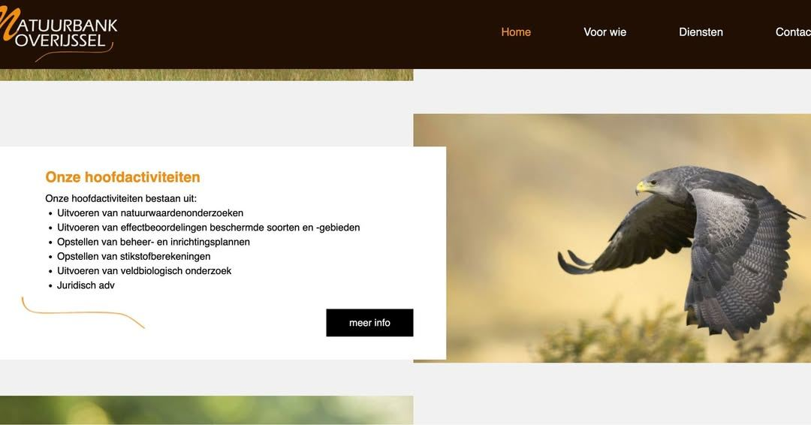
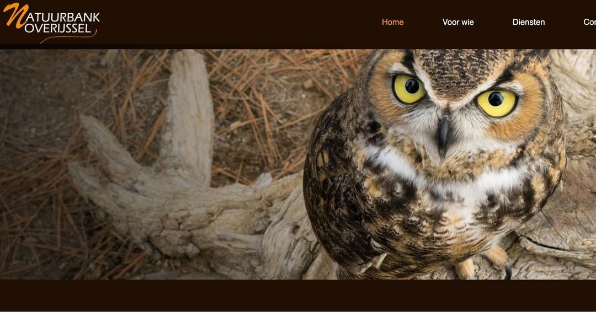

Zuid-Amerikaanse arend en Amerikaanse oehoe bij Overijssels onderzoek
1 november 2023 · Natuurbank Overijssel
- Op de foto
- Black-chested buzzard-eagle en Amerikaanse oehoe
- Het ging over
- Inheemse roofvogels en uilen


De website van Natuurbank Overijssel heeft wat mooie foto's gevonden op het internet om te gebruiken als illustraties bij al hun natuuronderzoek. Op de eerste foto bijvoorbeeld staat een Black-chested buzzard-eagle, een roofvogel die voorkomt in Zuid-Amerika. Op de tweede foto staat een Great Horned Owl, in het Nederlands 'Amerikaanse Oehoe'. Toch zonde als er niet gewoon inheemse 'Overijsselse' soorten worden gebruikt, want daar zijn er ook genoeg van!